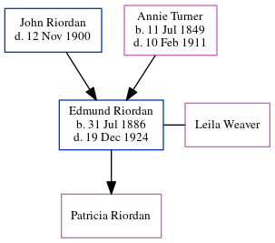

Edmund Owen Riordan 1886 - 1924
[ Home ] | [ Calendar ] | [ Surnames Index ] | [ Census Index ] | [ Family History ]The child of John Riordan (a prominent cotton buyer/brpler) and Annie Turner, Edmund Riordan, the great-great-uncle of Michele Copp (née Phillips), was born in Georgia on Jul 31, 18861,2,3,4 and married Leila Weaver (with whom he had 1 child, Patricia) in Fulton, Georgia, USA on Aug 13, 19166.
During his life, he was living in Atlanta Ward 4, Fulton, Georgia in 19001; in Atlanta Ward 6, Fulton, Georgia in 19102; and in Atlanta, Georgia7. In 1919 he traveled from Brest, France to Hoboken, New Jersey, departing on 3 Jul, arriving on 13 Jul with all of his children.
He died on Dec 19, 1924 in Atlanta, Georgia3,4,5 (died of a bullet to his head) and was buried in Atlanta, Fulton County, Georgia after Dec 19, 19244.
Parents
- John was born c. 29 Jun 1840
- Annie R was born on Jul 11, 1849
Citations
- 1900 United States Federal Census Online publication - Provo, UT, USA: MyFamily.com, Inc., 2004.Original data - United States of America, Bureau of the Census. Twelfth Census of the United States, 1900. Washington, D.C.: National Archives and Records Administration, 1900. T623, 1854 rolls.
- 1910 United States Federal Census Online publication - Provo, UT, USA: The Generations Network, Inc., 2006. For details on the contents of the film numbers, visit the following NARA web page: NARA.Original data - United States of America, Bureau of the Census. Thirteenth Census of the Unit
- Georgia, Deaths Index, 1914-1940 Ancestry.com Operations, Inc.
- U.S., Find A Grave Index, 1600s-Current Ancestry.com Operations, Inc.
- Georgia Deaths, 1919-98 Online publication - Provo, UT, USA: The Generations Network, Inc., 2001.Original data - State of Georgia. Indexes of Vital Records for Georgia: Deaths, 1919-1998. Gerogia, USA: Georgia Heatlh Department, Office of Vital Records, 1998.Original data: State
- Georgia, Marriage Records From Select Counties, 1828-1978 Ancestry.com Operations, Inc.
- U.S., Army Transport Service Arriving and Departing Passenger Lists, 1910-1939 Ancestry.com Operations, Inc. ( Lists of Incoming Passengers, 1917-1938. Textual records. 360 Boxes. NAI: 6234465. Records of the Office of the Quartermaster General, 1774-1985, Record Group 92. The National Archives at College Park, Maryland. Lists of Outgoing Passengers, 1917-1938. Textual records. 255 Boxes. NAI: 6234477. Records of the Office of the Quartermaster General, 1774-1985, Record Group 92. The National Archives at College Park, Maryland.)
Family Tree
Generated by ged2site. Last updated on Jun 6, 2024